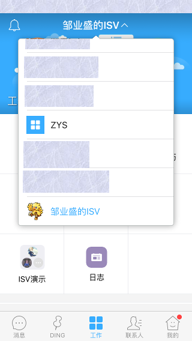
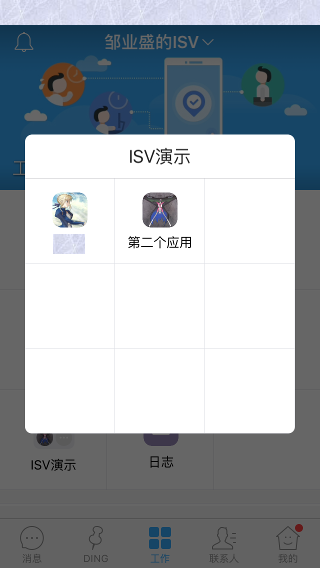
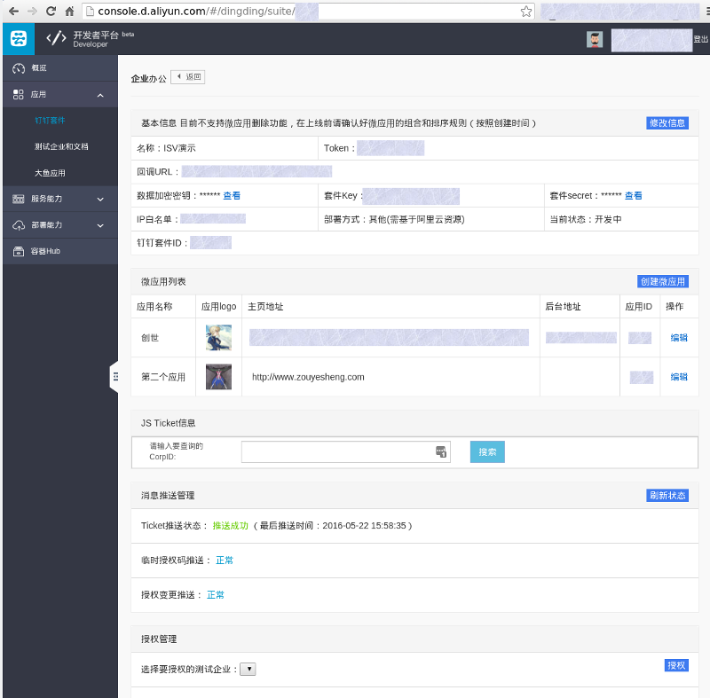
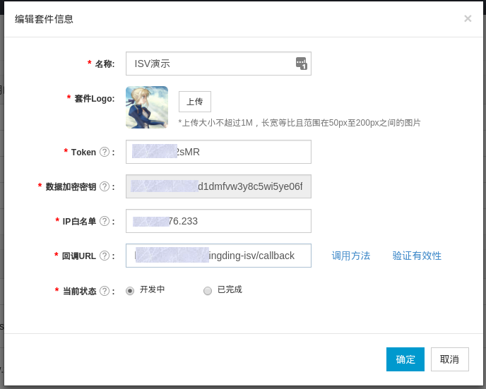
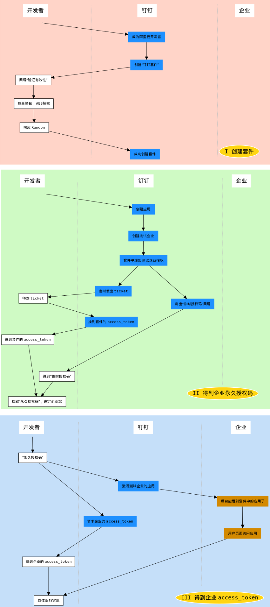

钉钉 ISV 接入流程
1. 基本概念
相较于 Web 领域经常碰到的 OAuth2 这类简单的三方授权模型，钉钉的 ISV 接入流程涉及的东西比较多一点，所以在正式开始之前，先把过程中会见到的各种概念拿出来说一下，同时，先用用钉钉吧。
1.1. 用户user与企业corp
钉钉中的用户与企业，算是一个开放式的关联关系，通过手机号来标识一个“唯一”的用户。
一个用户可以是多个企业的成员，在具体的操作页面上，可以切换到不同企业，从而看到不同企业中可能有不同的应用。

与用户相关的关键数据有： userId 和 jobnumber ， userId 是使用钉钉相关 api 时的用户标识， jobnumber 是用户在钉钉中，作为“员工”角色时的一个属性，它一般是打通钉钉与企业内部其它系统的标识。
与企业有关的关键数据，是几个配置数据， corp_id ， corp_secret 这两个是换 token 时会用到的（ISV 流程中用不到）。还有一个 sso_secret ，在作后台直接登录时会用到（这个功能不是非实现不可）。
用户的角色，除了是某个企业的“员工”之后，还可以是企业的“管理员”，或是“主管理员”。具体企业的管理后台，是通过 https://oa.dingtalk.com 单独登录的。
1.2. 应用agent与套件suite
“应用”就是在具体的企业页面，默认九宫格里一个一个的图标，点击之后会跳转到特定的页面。
“套件”是多个应用，视觉上在九宫格中它们会收在一起，点击之后再在一个弹出框中展开，就像 iOS 上的那个“附加程序”。

“套件”是对 ISV 才有的概念，因为钉钉设计的 ISV 接入规则中， ISV 就是以“套件”为单位来提供“产品输出”的。在创建了一个套件之后，可以在里面创建多个应用，而且按目前来看，授权也是以套件为单位，但是企业的管理员可以停用其中的某一个应用（这里钉钉的后台在交互上还有一个 BUG，2016-5-20）。

与应用有关的数据，是 app_id 和 agent_id 。与套件有关的数据，有 suite_key, suite_secret ，这两个也是用来换 token 的，当然还涉及其它的加密解密过程。
套件中的应用，用 app_id 来标识，但是它被企业使用了，放到了某个企业中，就用 agent_id 来标识了。
1.3. 签名signature与对称加密AES
签名用来防串改，钉钉用的签名算法是 sha1 ，跟其它场景一样，做法基本上也就是把几个值先排序，然后算 sha1 就好了。
AES 是对称加密算法，在钉钉服务器往 ISV 自己的应用服务器“推送”的场景，传递的信息就是 AES 加密之后的密文，并且要求响应的内容也要是密文。这块如果没接触过会比较折腾的。 AES 的具体实现中，会涉及到“补位”（因为 AES 是按固定长度的分块来处理，所以如果最后一块长度不够要补上），“补位”有 Zero Padding 就是用 \0 来补，或者用 PKCS #7 方法，根据最后一块长度的不同用不同的字节来补。
这块在各种语言中肯定都有现成方法，了解概念并且看文档仔细点，还是好处理的，代码也没几行。不过看文档不仔细就可能被坑哭，“补位”那里我起码被郁闷了一个小时，就是不知道哪里错了（我开始直接用 \0 来补的，而且因为解密没问题还没想到这块来）。
1.4. 应用市场与间接授权
ISV 机制是为“应用市场”而设计的，按钉钉官方的想法，作为独立服务提供商，可以开发完应用之后，上架市场，需要的企业自己到市场上来采购应用。
基于此，它的授权，通知的实现机制也就是现在这样，有些麻烦的样子了。
用户“采购应用”， 或者对应用做任何的配置性的操作，都是在钉钉的服务中完成的，但是实际提供服务的，却是具体 ISV 开发的应用。所以，企业用户，钉钉，ISV 三方之间，钉钉的服务就是一个衔接的作用，这其间的“推送”也算 ISV 方式与普通的“微应用”方式最大的不同了。（推送那里就涉及 AES 加解密）。
1.5. 为了安全？
背后依据与实际的效果不清楚，但是整个流程中因为安全的考虑，引入不少系统上的实现成本的。除了前面说的对称加密，还有一个很烦的机制是动态的 ticket 值，这个动态的 ticket 还是通过“推送”的方式来维护的。
还有为什么要使用“临时授权码”来换“永久授权码”也不是很懂，不过整个过程让我有点想起了 OAuth 1 时的痛苦。
好了，我们正式开始吧。
2. 第一步，注册
这一步按官方文档操作就好了。不需要自己单独去申请“企业”，在 ISV 的后台，可以专门创建测试用的企业，并且把未上架的套件对这些你自己创建的测试企业授权。
http://g.alicdn.com/dingding/opendoc/docs/_isvguide/tab3.html
通过这个文档，进到“阿里云”的后台 http://console.d.aliyun.com/ ，然后创建一个钉钉的套件。这个过程可能需要附加阿里云的开发者认证，但是事实上它跟阿里云完全没关系的。

好吧，如果你最后已经走到“创建套件”这里了，那么就可以了，不出意外的话，你是没法简单地把一个套件成功创建的，因为那个“回调URL”需要被即时检查，并通过，这就是下面我们要讲到的内容。

3. 第二步，被动回调处理
在创建套件时，填写的“回调URL”那里，需要通过有效性的检查，这一步就需要在服务器上完成对推送消息的处理（你点“验证有效性”时就马上会有一个请求出去，调试还是比较方便的）。
“验证有效性”是 http://ddtalk.github.io/dingTalkDoc/#2-回调接口（分为五个回调类型） 这里的第一个回调，在你填写的地址中，会收到一个 POST 请求，这个请求的完整样子大概像：
POST /callback?signature=111108bb8e6dbce3c9671d6fdb69d15066227608×tamp=1783610513&nonce=380320111 HTTP/1.1
Host: example.com
Content-Type: application/json
Content-Length: xxx
{
"encrypt":"1ojQf0NSvw2WPvW7LijxS8UvISr8pdDP+rXpPbcLGOmIBNbWetRg7
IP0vdhVgkVwSoZBJeQwY2zhROsJq/HJ+q6tp1qhl9L1+ccC9ZjKs1
wV5bmA9NoAWQiZ+7MpzQVq+j74rJQljdVyBdI/dGOvsnBSCxCVW0I
SWX0vn9lYTuuHSoaxwCGylH9xRhYHL9bRDskBc7bO0FseHQQasdfghjkl"
}
（ encrypt 的换行是我自己处理的）
对这个请求的所有处理，官方文档在 http://ddtalk.github.io/dingTalkDoc/#消息体签名 。
简单来说，我们自己写的服务接下来需要做三件事：
- 检查签名
- 解密消息
- 把响应内容加密再返回
3.1. 检查签名
每个对回调地址的请求，都会带上签名，我们需要按排序规则计算出签名值，再与请求中的签名值作比对。参与签名运算的有 4 个值：
- SUITE_TOKEN ，套件的 token 配置，就是在创建套件时我们自己填写的一段字符串。
- timestamp ，时间戳，在请求的 GET 参数中（
1783610513）。 - nonce ， 噪声值，在请求的 GET 参数中（
380320111）。 - encrypt ，请求的 body 中，按 json 解编码，取的
encrypt的属性值（1ojQf...hjkl）。
计算签名的方法如下：
from hashlib imoprt sha1 def sign(self, stamp, nonce, str): '签名计算' arg = [TOKEN, stamp, nonce, str] arg.sort() s = ''.join(arg) return sha1(s).hexdigest()
得到的结果应该与 GET 参数中的 signature 参数的值 11...608 一致。
3.2. 解密信息
第二步，钉钉服务器给的真正的信息是被加密后放到 encrypt 中的，所以我们要获取到真正有用的信息需要解密密文。
加解密使用 AES 算法，加密时以 PKCS#7 方式处理“补位”填充。解密时可以不用管“补位”的情况，因为原文还不是直接就是业务信息，原文本身还是一个“结构体”，业务信息是其中的一段字节。
先解密，密文是（换行是我自己处理的）：
{
"encrypt":"1ojQf0NSvw2WPvW7LijxS8UvISr8pdDP+rXpPbcLGOmIBNbWetRg7I
P0vdhVgkVwSoZBJeQwY2zhROsJq/HJ+q6tp1qhl9L1+ccC9ZjKs1wV
5bmA9NoAWQiZ+7MpzQVq+j74rJQljdVyBdI/dGOvsnBSCxCVW0ISWX
0vn9lYTuuHSoaxwCGylH9xRhYHL9bRDskBc7bO0FseHQQasdfghjkl"
}
中的 encrypt 的属性值，就是 1ojQf..hjkl 这段字符。
AES 算法需要一个密钥，它在创建件时的“数据加密密钥”这里，当然，页面上显示的是密钥 base64 编码之后的样子，我们使用时要作 decode （先在后面加一个等号 = 再 decode）。
解密都有现成的实现，用起来很简单了：
from Crypto.Cipher import AES AES_KEY = ('<数据加密密钥>' + '=').decode('base64') IV = 'x' * 16 def decrypt(self, str): '解密' aes = AES.new(AES_KEY, AES.MODE_CBC, IV) s = aes.decrypt(str) return s
IV 是随便一个长度为 16 的字符串就可以了。解密之后，得到的是一个“结构体”。
3.3. 拆结构体
上一部解密出来的“字节串”是一个“结构体”，它的构成是：
16字节随机串 + 4字节表示消息长度（网络序） + N字节的消息 + SUITE_KEY的值 + 补位字节
我们的目标只是那 N字节的消息 ，所以先从 16:20 的位置取出 4 个字节，按网络序解成整数，比如是 N ，再从 20 的位置开始往后取 N 个字节就好了。
import struct msg_len = struct.unpack('!I', s[16:20])[0] return s[20 : 20 + msg_len]
s 是解密出来的“字节串”。
把这一步合到上面的 decrypt 方法中就是：
def decrypt(self, str): '解密' aes = AES.new(AES_KEY, AES.MODE_CBC, IV) s = aes.decrypt(str) msg_len = struct.unpack('!I', s[16:20])[0] return s[20 : 20 + msg_len]
上面的 encrypt 拆出来之后，最后得到的是一个 json 字符串，大概像：
{
"EventType":"check_create_suite_url",
"Random":"brdkKLMW",
"TestSuiteKey":"suite4xxxxxxxxxxxxxxx"
}
3.4. 拼结构体与加密
说完了解密，再说加密。代码也很简单了：
def encrypt(self, str): '加密' aes = AES.new(AES_KEY, AES.MODE_CBC, IV) msg_len = struct.pack('!I', len(str)) s = [uuid.uuid4().hex[:16], msg_len, str, SUITE_KEY] s = ''.join(s) # 补位 s = self.padding(s) s = aes.encrypt(s) return s.encode('base64')
在拼结构体时，我们用 uuid 来产生随机值，用“无符号整型”类型的数据结构（网络序）来处理长度为 4 字节的一个数字。最后把这些直接拼在一起就好了（Python 2.x 的 String 类型就是“字节”， Unicode 类型是“字符”）。
上面的 padding 方法要说一下：
def padding(self, str): 'PKCS7补位' block_size = 32 count = block_size - len(str) % block_size if count == 0: count = block_size return str + count * chr(count)
以 32 为块长，最后差多少补多少，如果是 32 的整数倍则补 32 个字节。而用来填充的单字节内容，就是“差值”。
3.5. 完整过程
官方在 http://ddtalk.github.io/dingTalkDoc/#调试工具 这里提供了一套符合计算规则的例子，我们可以用这里的数据来验证我们的代码是否正确。这个页面中给出的数据有：
- signature 需要比对的签名值：
5a65ceeef9aab2d149439f82dc191dd6c5cbe2c0 - timestamp 时间戳：
1445827045067 - nonce 噪声值：
nEXhMP4r - SUITE_TOKEN token 值：
123456 - base64后的AES密钥：
4g5j64qlyl3zvetqxz5jiocdr586fn2zvjpa8zls3ij - SUITE_KEY：
suite4xxxxxxxxxxxxxxx - 加密的内容（换行是我自己处理的）：
1a3NBxmCFwkCJvfoQ7WhJHB+iX3qHPsc9JbaDznE1i03peOk1LaOQoRz3+nlyGNhwmwJ3vDMG+OzrHMeiZI7gT RWVdUBmfxjZ8Ej23JVYa9VrYeJ5as7XM/ZpulX8NEQis44w53h1qAgnC3PRzM7Zc/D6Ibr0rgUathB6zRHP8PY rfgnNOS9PhSBdHlegK+AGGanfwjXuQ9+0pZcy0w9lQ==
完整的代码如下：
# -*- coding: utf-8 -*- import uuid import struct import json import time from hashlib import sha1 from Crypto.Cipher import AES 'http://ddtalk.github.io/dingTalkDoc/#调试工具' TOKEN = '123456' ENCODING_AES_KEY = '4g5j64qlyl3zvetqxz5jiocdr586fn2zvjpa8zls3ij' AES_KEY = (ENCODING_AES_KEY + '=').decode('base64') SUITE_KEY = 'suite4xxxxxxxxxxxxxxx' IV = 'x' * 16 def sign(stamp, nonce, str): '签名计算' arg = [TOKEN, stamp, nonce, str] arg.sort() s = ''.join(arg) return sha1(s).hexdigest() def decrypt(str): '解密' aes = AES.new(AES_KEY, AES.MODE_CBC, IV) s = aes.decrypt(str) msg_len = struct.unpack('!I', s[16:20])[0] return s[20 : 20 + msg_len] def padding(str): 'PKCS7补位' block_size = 32 count = block_size - len(str) % block_size if count == 0: count = block_size return str + count * chr(count) def encrypt(str): '加密' if isinstance(str, unicode): str = str.encode('utf8') aes = AES.new(AES_KEY, AES.MODE_CBC, IV) msg_len = struct.pack('!I', len(str)) s = [uuid.uuid4().hex[:16], msg_len, str, SUITE_KEY] s = ''.join(s) s = padding(s) s = aes.encrypt(s) return s.encode('base64') demo = { 'nonce': 'nEXhMP4r', 'stamp': '1445827045067', 'sign': '5a65ceeef9aab2d149439f82dc191dd6c5cbe2c0', 'body': '1a3NBxmCFwkCJvfoQ7WhJHB+iX3qHPsc9JbaDznE1i03peOk1LaOQoRz3+nlyGNhwmwJ3vDM G+OzrHMeiZI7gTRWVdUBmfxjZ8Ej23JVYa9VrYeJ5as7XM/ZpulX8NEQis44w53h1qAgnC3P RzM7Zc/D6Ibr0rgUathB6zRHP8PYrfgnNOS9PhSBdHlegK+AGGanfwjXuQ9+0pZcy0w9lQ==' } if __name__ == '__main__': print sign(demo['stamp'], demo['nonce'], demo['body']) print decrypt(demo['body'].decode('base64')) info = json.loads(decrypt(demo['body'].decode('base64'))) type = info['EventType'] random = info['Random'] suite_key = info['TestSuiteKey'] return_encrypt = encrypt(random) nonce = uuid.uuid4().hex[:8] stamp = str(int(time.time() * 1000)) return_sign = sign(stamp, nonce, return_encrypt) p = { 'msg_signature': return_sign, 'timeStamp': stamp, 'nonce': nonce, 'encrypt': return_encrypt, } print json.dumps(p)
3.6. 处理全部回调
其实有了上面的内容，只需要把获取到的信息解密，得到 Random 值再加密响应就好了，这样套件就能创建成功了。
套件成功之后，先在套件管理后台把 SUITE_KEY 这个值看一下，之前用的 suite4xxxxxxxxxxxxxxx 只是一个临时值，在套件创建成功之后，就不用了。
目前钉钉的服务器会往“回调”地址推送的消息，一共有 7 种类型（加密的 json 字符串中 EventType 属性会标识类型）：
| EventType | 说明 | 响应 |
|---|---|---|
| check_create_suite_url | 验证回调 URL 的有效性，创建套件时发生 | 响应得到的 Random 值 |
| suite_ticket | 定时推送的 ticket 值，20 分钟一次 | 记录 ticket 值，响应 success 字符串 |
| tmp_auth_code | 推送临时授权码，在套件页面添加测试企业时发生（真实环境不知道何时发生，可能是企业添加应用时？） | 记录 AuthCode 值，响应 success 字符串 |
| change_auth | 推送授权变更消息，比如禁用启用应用时 | 检查各应用状态，响应 success 字符串 |
| check_update_suite_url | 套件信息更新，套件信息改变时发生 | 响应得到的 Random 值 |
| suite_relieve | 企业解除授权 | 清理相关数据，响应 success 字符串 |
| check_suite_license_code | 不知道什么时候会用到 | 成功的话响应 success 字符串 |
虽然 7 种类型看起来有些多，但是因为它们的结构都是一样的，所以代码写起来没多少：
class DingDingIsvCallbackHandler(DingDingIsvBaseHandler): def return_encrypt(self, s): '响应加密后的内容' stamp = str(int(time.time() * 1000)) nonce = uuid.uuid4().hex[:8] encrypt = self.encrypt(s) sign = self.sign(stamp, nonce, encrypt) p = { 'msg_signature': sign, 'timeStamp': stamp, 'nonce': nonce, 'encrypt': encrypt, } self.finish(p) def check_create_suite_url(self, info): '创建套件时的检查' self.return_encrypt(info['Random']) def suite_ticket(self, info): '定时推送的 ticket' suite_key = info['SuiteKey'] # 这个 suite_key 要保存下来 self.return_encrypt('success') def tmp_auth_code(self, info): '企业的临时码' tmp_code = info['AuthCode'] # 保存下来，或者在这里就去换永久授权码了 self.return_encrypt('success') def change_auth(self, info): '授权变更' corp_id = info['AuthCorpId'] self.return_encrypt('success') def check_update_suite_url(self, info): '套件信息变更' self.return_encrypt(info['Random']) def suite_relieve(self, info): '企业取消了授权' corp_id = info['AuthCorpId'] self.return_encrypt('success') def check_suite_license_code(self, info): '检查序列号' self.return_encrypt('success') @web.asynchronous def post(self): sign = self.get_argument('signature', '') nonce = self.get_argument('nonce', '') stamp = self.get_argument('timestamp', '') try: encrypt = json.loads(self.request.body)['encrypt'] except: self.finish('error') return check_sign = self.sign(stamp, nonce, encrypt) if check_sign != sign: self.finish('error') return info = self.decrypt(encrypt.decode('base64')) info = json.loads(info) logger.info('DingDingISV:'+ str(info)) type = info['EventType'] method_map = { 'check_create_suite_url': self.check_create_suite_url, 'suite_ticket': self.suite_ticket, 'tmp_auth_code': self.tmp_auth_code, 'change_auth': self.change_auth, 'check_update_suite_url': self.check_update_suite_url, 'suite_relieve': self.suite_relieve, 'check_suite_license_code': self.check_suite_license_code, } return method_map[type](info)
至此，我们的服务就可以接收钉钉服务器的消息推送了。重点是我们可以得到 SUITE_TICKET 值了，后面会看到，其它的会在运算中用到的配置项都可以在一个配置文件中写死，只有这个 ticket 值是动态的。
4. 第三步，服务端主动调用
上面做完，ISV 接入中特别的地方也就差不多了，剩下的东西跟普通的自建微应用没有大的区别，基本上就是拿 token 请求 api 取数据的套路，只是 ISV 接入在流程上多几步。
这部分的官方文档在： http://ddtalk.github.io/dingTalkDoc/#isv接入开发指南 。
（下面所有的“服务地址”，都是以 https://oapi.dingtalk.com/service 开头的）
| 要做的事 | 用到的钉钉服务地址 | 请求的参数 | 响应 |
|---|---|---|---|
| 获取套件的 suite_access_token | /get_suite_token |
suite_key , suite_secret, suite_ticket |
suite_access_token |
| 获取企业的永久授权码 | /get_permanent_code |
suite_access_token, tmp_auth_code |
permanent_code |
| 获取企业的基本信息 | /get_auth_info |
suite_access_token, permanent_code, suite_key, auth_corpid |
企业基本信息，包括套件中的各应用在这个企业的 agent 信息 |
| 获取企业中的本套件中的具体应用的状态 | /get_agent |
suite_access_token, permanent_code, suite_key, auth_corpid, agentid |
应用信息，包括是否“激活”的状态 |
| 激活某企业中的套件 | /activate_suite |
suite_access_token, permanent_code, suite_key, auth_corpid |
（无） |
| 获取企业的 corp_access_token | /get_corp_token |
suite_access_token, permanent_code, auth_corpid |
corp_access_token |
说一下上面每一个操作拿到的东西都有什么用：
suite_access_token， ISV 行为的所有 api 都需要用它。permanent_code，以 ISV 角色去获取指定企业的相关信息需要用它（直到拿到企业的corp_access_token）。corp_access_token，这东西的作用跟“微应用”方式下我们自己取得的access_token是一样的，用它就可以直接去使用钉钉的其它 api 了。
看了上面的列表，是不是特别想吐槽那重复的“请求参数”，本来嘛，一个 suite_access_token 中其实已经包含了 suite_key 这个信息。同理， permanent_code 中也是包含了 auth_corpid 信息。那么 suite_access_token + permanent_code 已经表达清楚了我是哪个套件，要针对哪个企业进行操作。
再补充说几点：
- 至少在测试企业中，只是在套件后台添加了一个测试企业的话，在测试企业的管理后台还是看不到套件应用的。需要“激活”之后，才能在企业的后台看到添加的套件应用，并进行配置，或者停用其中的某些应用。
suite_ticket是动态变化的，钉钉的服务器会通过“回调地址”定时主动推送，需要应用自己保存。suite_access_token和corp_access_token在调用 api 时会频繁用到，在获取时钉钉服务会一并响应一个“有效期”，在有效期内access_token是可以重复使用的，所以应用系统应该自己缓存并维护access_token的更新。
5. 第四步，容器页面与 jsapi
上面进行至获取到企业的 access_token 之后，剩下的事跟普通的自建“微应用”就一样了。
但是在这之前，从用户的页面上去考虑流程，还有一点是我们需要去解决的，页面中的 jsapi 在使用时某些功能是依赖 dd.config 的，而 dd.config 需要的信息中，有 corp_id 企业 ID 和 agent_id 应用 ID 这两个。在自建微应用的方式下， corp_id 和 agent_id 都是确定的，我们完全可以写死在应用系统的配置中。
换到 ISV 流程下的话， corp_id 和 agent_id 都不是确定的，那么就需要我们在交互流程中去确定这两个信息，才能让 dd.config 完成，进而让页面有完整的 jsapi 能力。
哪里去弄 corp_id 和 agent_id 呢？
http://ddtalk.github.io/dingTalkDoc/#免登服务 从这里，能看到官方“补丁”式的一个解决方法，在应用的地址中，显式地用“占位符”的方法标识当前的 corp_id ，这样就可以通过地址来给到 corp_id 信息了。
所以在套件后台，我们把应用的主页地址写成： http://example.com/index?corp=$CORPID$ 这样。之后不管是后端的模板直接在页面渲染 $CORPID$ 的值，还是前端解析 location.href 获取这个值，反正 dd.runtime.permission.requestAuthCode 的正确执行是没有问题了（ requestAuthCode 不需要 dd.config 也可以的），拿到 code 之后，可以进而得到当前用户在当前企业的， userId 。
再回到 corp_id 的话题，如果要完全能力的 jsapi ，那么需要 dd.config ，它需要有签名。在后端作签名时，需要 corp_access_token ，而得到 corp_access_token 也是需要 corp_id （这里假设前面的流程都没有问题，已经得到了对应企业的 permanent_code）。
考虑到 URL 参数中加塞一个 corp 参数的不确定性（不同页面切换时总要小心），同时考虑我们纠结的 corp_id 只会在钉钉场景中出现（这个条件可以确定用户访问某个页面一定可以“自动完成登录”），所以：
- 单独的一个登录页， URL 带
corp_id。 - 后端的 jsapi 签名，
code换用户信息这两个服务，以参数形式显式接收corp_id。 - 在单独的登录页，前端通过直接解析 URL 来得到
corp_id，以作请求服务时使用。 - 登录完成之后，后端把
corp_id保存到当前用户的“会话”中。后面的服务不再需要显式地传递corp_id。
上面我们解决了 corp_id 的问题。现在说 dd.config 还需要的 agent_id 这个值，就是这个应用在这个企业中的 id 。
在处理上，套件后台配置具体应用的主页地址时，我们可以把套件应用的 appid （应用的独立 ID，没有挂在某个企业下时）写到 URL 当中，请求上面说的两个服务时也带上，后台通过 http://ddtalk.github.io/dingTalkDoc/#6-获取企业授权的授权数据 这个服务，可以在比对 appid 之后得到 agent_id 信息。
把上面的四点改进为：
- 单独的一个登录页， URL 带
corp_id和app_id信息。（套件应用的主页地址）其中corp_id使用$CORPID$获取，app_id是写死的确定值。 - 后端的 jsapi 签名，
code换用户信息，这两个服务，以参数形式显式接收corp_id和app_id，响应时给到前端agent_id。 - 在单独的登录页，前端通过直接解析 URL 来得到
corp_id和app_id，以作请求服务时使用。 - 登录完成之后，后端把
corp_id保存到当前用户的“会话”中。后面的服务不再需要显式地传递corp_id。
其中前端通过 jsapi 拿到的 code 就可以作为其登录的一个凭证。
整个过程后端有两个服务，前端一个页面。
获取签名的参考：
class DingDingIsvJsapiSignHandler(DingDingIsvBaseHandler): TICKET_URL = 'https://oapi.dingtalk.com/get_jsapi_ticket' @gen.engine def get_ticket(self, token, callback): '通过 access_token 获取 jsapi_ticket' url = self.TICKET_URL + '?' + 'access_token=' + token response = yield gen.Task(AsyncHTTPClient().fetch, url) ticket = json.loads(response.body)['ticket'] callback(ticket) def jsapi_sign(self, ticket, url): 'jsapi 需要的签名' stamp = int(time.time()) nonce = uuid.uuid4().hex p = { 'noncestr': nonce, 'jsapi_ticket': ticket.encode('utf8'), 'timestamp': str(stamp), 'url': url, } keys = p.keys() keys.sort() pair = [ (k, p[k]) for k in keys] pair = '&'.join('{}={}'.format(*p) for p in pair) sign = sha1(pair).hexdigest() return sign, stamp, nonce @web.asynchronous @gen.engine def get(self): '获取指定页面的钉钉 jsapi 的签名' url = self.get_argument('url', '') corp_id = self.get_argument('corp_id', '') app_id = self.get_argument('app_id', '') corp = self.session.query(Corp).filter_by(corp_id=corp_id, suite_key=SUITE_KEY).first() if not corp: self.finish({'code': 1, 'msg': u'不存在的企业'}) return token = yield gen.Task(self.get_corp_access_token, corp_id, corp.permanent_code) ticket = yield gen.Task(self.get_ticket, token) sign, stamp, nonce = self.jsapi_sign(ticket, url) response = yield gen.Task(self.get_corp_auth_info, corp_id, corp.permanent_code) agent_list = response['auth_info']['agent'] agent_id = '' for agent in agent_list: if str(agent['appid']) == app_id: agent_id = agent['agentid'] data = { 'agent_id': agent_id, 'corp_id': corp_id, 'timestamp': stamp, 'nonce': nonce, 'sign': sign, } self.finish({'code': 0, 'data': data})
获取当前用户信息：
class DingDingIsvLoginHandler(DingDingIsvBaseHandler): '通过 code 来获取当前用户信息并登录' USER_INFO_URL = 'https://oapi.dingtalk.com/user/getuserinfo' USER_DETAIL_URL = 'https://oapi.dingtalk.com/user/get' @web.asynchronous @gen.engine def get(self): code = self.get_argument('code', '') corp_id = self.get_argument('corp_id', '') corp = self.session.query(Corp).filter_by(corp_id=corp_id, suite_key=SUITE_KEY).first() if not corp: self.finish({'code': 1, 'msg': u'不存在的企业'}) return token = yield gen.Task(self.get_corp_access_token, corp_id, corp.permanent_code) # 拿 userId p = { 'access_token': token, 'code': code, } url = self.USER_INFO_URL + '?' + urllib.urlencode(p) response = yield gen.Task(AsyncHTTPClient().fetch, url) response = json.loads(response.body) userId = response['userid'] # 拿更多的信息 p = { 'access_token': token, 'userid': userId, } url = self.USER_DETAIL_URL + '?' + urllib.urlencode(p) response = yield gen.Task(AsyncHTTPClient().fetch, url) obj = json.loads(response.body) # 做登录的事 # 把 corp_id 写到会话中 self.finish({'code': 0, 'data': obj})
前端页面：
<!DOCTYPE html> <html> <head> <meta charset="utf-8" /> <title>钉钉 ISV 登录</title> <script type="text/javascript" src="http://g.alicdn.com/ilw/ding/0.8.6/scripts/dingtalk.js"></script> <script type="text/javascript" src="http://s.zys.me/js/jq/jquery.min.js"></script> </head> <body> <h1>正在登录 ...</h1> <div id="msg"></div> <script type="text/javascript"> $(function(){ var corpId = location.href.match(/corp_id=(\w*)/)[1]; var appId = location.href.match(/app_id=(\d*)/)[1]; $.ajax({ url: '/dingding-isv/jsapi-sign', dataType: 'jsonp', data: {corp_id: corpId, app_id: appId, url: location.href}, success: function(response){ var info = response.data; dd.config({ agentId: info.agent_id, // 必填，微应用ID corpId: info.corp_id,//必填，企业ID timeStamp: info.timestamp, // 必填，生成签名的时间戳 nonceStr: info.nonce, // 必填，生成签名的随机串 signature: info.sign, // 必填，签名 jsApiList: [ 'runtime.permission.requestAuthCode', ] }); dd.ready(function(){ dd.runtime.permission.requestAuthCode({ corpId: info.corp_id, onSuccess: function(result) { var code = result.code; $.ajax({ url: '/dingding-isv/login', data: {code: code, corp_id: corpId}, dataType: 'json', success: function(response){ var user = response.data; var value = [user.name, user.jobnumber, user.userId]; $('#msg').html(value.join('<br />')).css('font-size', '40px'); } }); }, onFail : function(err) { alert('出错了, ' + err); } }); }); } }); }); </script> </body> </html>
6. 整体流程示意图
